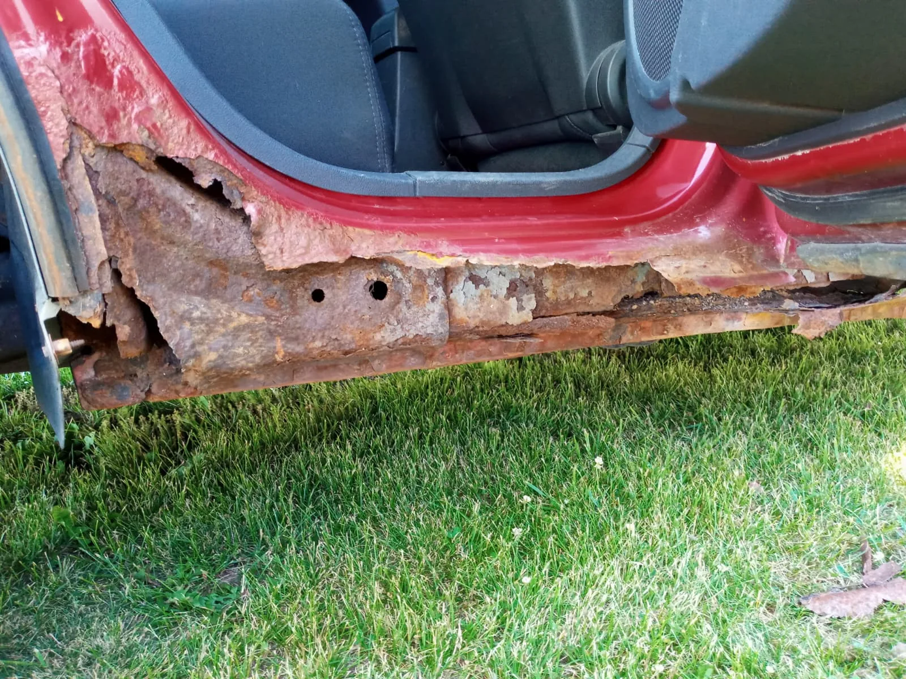

Qué puede incluir este servicio
- Corte del área dañada
- Adaptación de lámina nueva
- Nivelación de la superficie
- Primer y acabado final
Consideraciones importantes
- La magnitud del daño debe revisarse con fotos o inspección.
- El color y el acabado final dependen de cada vehículo.
- La reparación se acepta solamente cuando el lugar y el acceso son seguros.
Fotografías relacionadas


Zona de atención
Operamos principalmente en Dubuque. Las ubicaciones más alejadas pueden tener un costo adicional por traslado, confirmado antes de agendar.